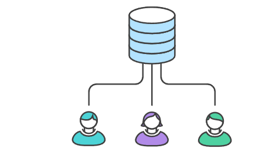
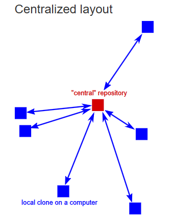
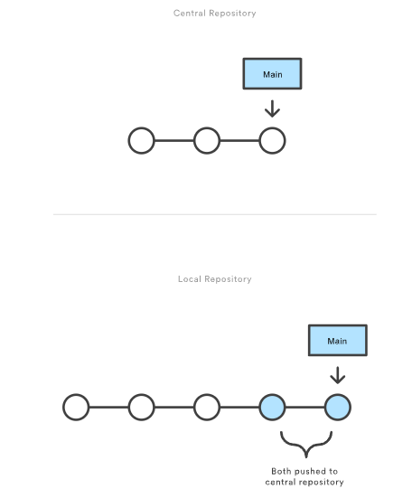

Centralized:Workflow
This page describes a centralized workflow approach for managing issues and projects. In a centralized workflow, all issues, or tasks, and communications are funneled through a single point of control, allowing for streamlined decision-making and oversight. This method is particularly effective for teams that require tight coordination and clear accountability.
Description
With centralized workflows, there is only one branch. It is the main branch. It is also called the master branch. All developers working jointly on a repository commit their work to this branch. This workflow model is best suited for small teams and simple projects. All developers must have good communication skills to avoid merge conflicts. A merge conflict can happen when 2 developers are individually working on the same lines of code or nearby lines in the same file. If one developer commits their update to that file to the main branch, the second developer will encounter a merge conflict if they haven't pulled that update from the remote repo prior to committing changes to it. It can also happen if the second developer deletes the file, commits their work, and pushes their work. The remote repo is expecting that file to be there because their local main branch is behind the remote main branch. It is better if each developer plans and works on different files. If they plan and agree to work on the same files, they should communicate what they are working on within those files and schedule. DevOps Engineers should Implement clear roles and responsibilities, use a centralized calendar for scheduling, and ensure constant communication and synchronization, pull changes frequently, make small commits, and use tools like rebasing to keep the history linear and prevent merge conflicts. Treat the central repository as immutable and prevent local commits from diverging from the central repository by following these tips.



Examples
- The single source of truth: All developers push and pull their code from a single, main branch in a central repository.
- A new developer joins the project: The developer begins by cloning the central repository to their local machine.
- Multiple developers work on a task: Two team members, John and Jessica, are both working on different sections of the website.
- One developer pushes their changes: John finishes his work first and pushes his changes to the main branch of the central repository.
- The other developer updates their local copy of the same file John was working on: Jessica tries to push her work next, but her push is rejected because the main branch has been updated by John.
- Resolving conflicts: Jessica must first pull John's new changes from the central repository and merge them with her own work. She resolves any potential code conflicts that arise.
- Final push to the central repository: After the merge, Jessica successfully pushes her new, complete code to the main branch.
Summary
- Centralized workflows are best suited for small teams and simple projects where communication is straightforward.
- Simplicity: The lack of complex branching makes it easy for developers to understand, especially those new to version control systems like Git.
- Speed: Since every change is committed directly to the main branch, there is minimal overhead from creating and managing feature branches, which can speed up the development process for small projects.
- Consistent history: The linear development process creates a clear and straightforward project history, which is easy to track and maintain.
- Less overhead for communication: For a small team, communication is easy, so developers can coordinate to avoid working on the same files at the same time and minimize merge conflicts.